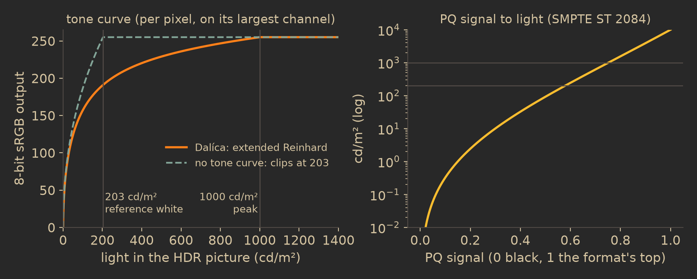

Video
How Dalíca reads, decodes and plays your clips without any system codec: which containers and codecs it takes and why HEVC is left out of standard downloads, how a clip's poster frame is picked, how HDR is brought down to an ordinary screen, and what trimming, Save Frame as Picture and Export Clip actually do to the file.
Containers and codecs
A video is recognized by its content, never by its extension. Dalíca reads four containers:
- MP4, M4V and QuickTime (MOV)
- ISO base media files whose
ftypbox names a movie brand (isom,iso2toiso9,mp41,mp42,avc1, the3gpbrands,M4V,qtand others). A file whose brands name a still image (HEIC, AVIF, a camera's raw) or a sound-only file (M4A) is not a video. Older QuickTime movies without anftypbox are recognized by their first box (moov,mdat,wide,pnot). - Matroska (MKV)
- Recognized by its EBML DocType
matroska. WebM is not listed.
When a folder is scanned, each video is probed without decoding a single frame: only the ftyp and moov boxes are read (the media data is skipped), or a Matroska file's head. The probe gives the duration to the millisecond, the stored frame size, the rotation in clockwise quarter turns (from the track matrix), the creation date, the video and sound codecs, the frame rate, whether there is sound, and the location when the file holds one. The light table cell gets the shape of the clip as shown, so a phone clip filmed upright is taller than wide.
| Stream | Decoder | Standard download |
|---|---|---|
H.264 (avc1, avc3, Matroska V_MPEG4/ISO/AVC) | altc264 0.1.1 | yes, in every build |
HEVC / H.265 (hvc1, hev1, V_MPEGH/ISO/HEVC) | rusty_h265 0.6.2, vendored with threads added | no: only in builds made with the hevc feature |
AAC sound (mp4a, Matroska A_AAC) | rusty_aac 1.1.1 | yes |
| Anything else (ProRes, AV1, VP9, AC-3 sound, ...) | none | listed, not played |
Whether a clip plays is decided from the facts the scan read, never by opening the file. A clip of a codec Dalíca does not decode keeps a video tile with the reason, "This video can't be played (ProRes)", and still takes part in everything that works on the container rather than the pictures: it can be trimmed, copied with Export Clip, and exported as a full video. A clip whose pictures play but whose sound does not plays muted and says so: "This clip plays without sound (AC-3 sound can't be played)". A stream the decoder itself refuses (4:2:2 or 4:4:4 chroma, for example, or HEVC range extensions) also keeps its tile, and the reason then names the profile.
Why HEVC is not in standard downloads
Most phones record HEVC by default, so this is the limitation you are most likely to meet. The decoder exists and works: it decoded all 147 streams of the ITU HEVC conformance suite and every phone clip it was measured on exactly. It is left out of the release builds because decoding HEVC needs a patent licence in some countries, and Dalíca is free software that anyone may redistribute. The same decision keeps HEIC photos (whose pictures are HEVC too) out of release builds.
In a standard download, every path that would decode an HEVC clip (the player, thumbnails, the slideshow, Export's first frame, the collage) answers "This video can't be played (HEVC support isn't included in this build)" and never touches the stream. If you build Dalíca yourself and the licensing situation where you live allows it, cargo build -p dalica --features hevc turns all of those paths on, and HEVC clips then behave exactly like H.264 ones.
Decoding in pure Rust
Dalíca links no C codec library and asks the operating system for no codec. Every byte of a video, from the container's boxes to the decoded pixels, is handled by Rust code inside the program. That has three practical effects: a clip plays the same on Linux, Windows and macOS; a build needs no system packages; and a hostile file meets code that was chosen and tested for exactly that.
A decoder was only accepted after a measured trial on real phone files. To pass, one crate had to:
- decode every real phone file of its kind with frames identical to a reference decoder (H.264 and HEVC decoding is exact by their standards);
- decode 1080p at least in real time on one core;
- pass the project's dependency audit with no licence exception and no C build;
- never panic or hang on damaged input.
Some of the passing decoders use unsafe code internally for speed (the H.264 decoder in 257 places). That was accepted behind a fuzzing gate of Dalíca's own: fuzz targets reach the H.264, HEVC and AAC decoders through Dalíca's entry points and run at every milestone review. Around them, the demuxer treats every length as hostile: frames are at most 8,192 pixels on a side and 8,192 × 4,352 in all, a sample at most 32 MiB, a track at most 221 samples, and the pictures a decoder may hold (its largest reference buffer of 16, the picture being decoded and those waiting to be shown) must fit the memory limit before decoding starts. A decoder that panics anyway is caught, and a new one is made for the next request.
Frames and seeking
Frames are numbered in display order. The frame "at a time" is the last one shown at or before that time. Reaching it means decoding from the sync sample (key frame) at or before it, once more from the one before that when the stream's leading pictures need it. Stepping forward continues the decode; stepping back decodes again from the sync sample, but the last four frames returned are kept, so a step back after a step forward costs nothing.
The color conversion follows what the stream signals: the BT.601, BT.709 or BT.2020 matrix (or none, for GBR), limited or full range, any chroma subsampling, 8 to 16 bits a sample. A stream that leaves its matrix unspecified gets BT.709 when it is 720 lines or taller and BT.601 below. Scaling happens in the same pass: each output pixel averages the block of source pixels it covers.
How the poster frame is chosen
A clip's thumbnails at every size, its preview in the edit view, its picture in a collage and its "first frame" in an export are all the same frame: its poster frame. The rule is: the first frame whose mean luma reaches 0.06 within the first 10 seconds; if there is none, the very first frame.
The point is to skip the black frames many clips start with: a fade-in from black, a phone pulled out of a pocket, a camera with the lens cap still on. A threshold of 0.06 is barely above black, so a genuinely dark scene (a night sky, a candlelit room) still has frames that pass, and the poster is very close to the start; only near-black frames are skipped. The 10 second limit bounds the work: a clip that stays black is not decoded to its end just to make a thumbnail.
The mean luma is measured on the decoded luma plane, sampled on a grid of about 64 × 64 points (every width/64-th pixel of every height/64-th row), and normalized to the stream's own black and white levels: for an 8-bit limited-range stream, code 16 is 0 and code 235 is 1, so the limited-range black that most video uses really counts as black. For 10-bit streams the levels scale with the depth.
For thumbnails, the poster is decoded once, at 256 pixels on the long side (the scan's size, which also makes the 128 pixel thumbnail), on a thumbnail worker with no decoder threads of its own, since the pool's workers are already the parallelism. Each frame read on the way is scaled to that size before it is kept. A clip whose codec this build does not decode is never opened for a thumbnail: its cell keeps the video tile.
HDR and 10-bit video on an ordinary screen
Recent phones record HDR video: 10-bit samples, wide BT.2020 primaries, and a transfer function (PQ or HLG) that encodes light far brighter than an ordinary screen's white. Shown as if it were ordinary video it looks washed out and gray. Dalíca recognizes HDR from the stream's color description (transfer PQ or HLG, or BT.2020 primaries) and converts it on the way to sRGB:
- To light. The signal is turned into linear light through a 4,096-entry table. PQ (SMPTE ST 2084) gives absolute light in cd/m², which is divided by 203, the reference white of SDR content (ITU-R BT.2408). HLG gives scene light, then BT.2100's system gamma for a 1,000 cd/m² display (gamma 1.2) is applied, again relative to 203.
- To sRGB's colors. BT.2020 primaries are converted to BT.709 (sRGB's) with the standard 3 × 3 matrix; colors that fall outside are clipped at zero.
- Tone curve. The extended Reinhard operator, applied on each pixel's largest channel and the same factor to all three, so hues keep their ratios instead of drifting toward white. Its white point is the assumed peak, 1,000 cd/m² (HLG's nominal peak, and what phones master PQ for): light at 1,000 cd/m² becomes exactly sRGB white, and anything brighter clips.
- Encode as 8-bit sRGB.

The trade-off is that HDR clips look a little darker than the same scene filmed in SDR, because reference white sits at about 75 % of the sRGB range instead of at the top, leaving room for the highlights. That is the price of keeping clouds and lamps from turning into flat white. This conversion is also the most expensive part of HDR playback: about 45 ms for a 1080p frame on one core, and like the decoder it runs on the player's decoding threads.
A wide-gamut stream that is not HDR (BT.2020 primaries with an ordinary transfer) takes the same path without the tone curve: linearized with BT.1886's gamma 2.4, converted to BT.709 primaries, and encoded.
The player
A video opens in the edit view with a player under it. The window's thread never decodes: frames are decoded ahead on a worker of the player's own, at most 8 frames ahead and at most 1,920 pixels on the long side. The frame on screen is always the last one that is due.
The sound's clock drives playback. Play opens the sound output at the clip's format and keeps half a second of its sound queued ahead of what has been heard. The position is where play started plus what the output says has been heard, so the pictures follow the sound and wait for it if it stalls. A clip without sound queues silence, so its clock runs the same way; with no sound output on the system at all, the session's own clock is used.
When decoding cannot keep up, every decoded frame is still shown as it comes, so the picture moves at the rate the decoder manages, but a decoder more than 0.1 s behind skips ahead to a key frame (one already due, or one that will be due by the time it is decoded; once it is a full second behind, the next one). The picture catches up with the sound at each key frame, and the sound is never held back for it. The goal for a 1080p 30 fps clip is a decoded, converted frame within 16 ms at the 95th percentile, so a 60 Hz window shows every frame; on the development machine, with 8 decoding threads, an iPhone H.264 1080p30 clip measured 11.1 ms.
Trimming
A trim is a recipe entry, trim(start,end), in whole milliseconds from the clip's start, the start before the end: trim(500,1500) plays from 0.5 s to 1.5 s. Nothing in the video file changes, exactly as with a photo's edits. Set Start and Set End set one end at the current position and keep the other (the clip's start or end when there was no trim yet), replacing the trim entry in place: one step of the video's own history ("Undo Trim"). A start at or after the end is refused. If a recipe somehow holds several trims, the last readable one counts.
Play starts at the trim's start when the position is outside it and stops, paused, at its end. The slideshow plays only the trimmed part too. The trim and the rotation are the only edits a video has; there is no color editing of video.
Save Frame as Picture
Save Frame as Picture writes the frame on screen as a new photo:
- at the clip's full size (not the player's 1,920 px preview), upright, with the video's own rotations and flips from its recipe;
- through the one output pipeline (the frame is held losslessly in memory, then encoded), as a JPEG at quality 92 with an EXIF thumbnail;
- into
Pictures/Dalica/Video Frames, made when missing and marked as the Video Frames project so it shows under Projects; - named
<clip> <hh-mm-ss>.jpgafter the frame's time (made safe for every system), with-001and so on when the name is taken, never replacing a file; - with its date taken set to the clip's date plus the frame's time, so a frame from 1 minute 20 seconds into a clip sorts 80 seconds after the clip's start.
It runs as an export job. A clip Dalíca cannot play has no frame to save, so the command is refused with the reason.
Export Clip
Export Clip makes a new file holding only the trimmed part, in the same container. It never re-encodes: the coded pictures and sound are copied as they are, so there is no quality loss and it works on any clip whose container Dalíca reads, whether or not it can decode the codec.
The catch is that a decoder can only start at a key frame. So the copy starts at the last key frame at or before the trim's start, and ends with the last frame shown before the trim's end. The real cut is reported, for example "Exported IMG_0042 trimmed.mov (0:00.4 to 0:01.5)", and the new file's edit list starts the presentation at the cut.
How the copy is built depends on the container:
- MP4, M4V and QuickTime: the movie box is read (at most 64 MiB) and each track's sample tables are expanded (time to sample, composition offsets, sync samples, sample to chunk, sizes, chunk offsets, edit lists). The new file is the source's
ftyp, a movie box with each track's own boxes copied (headers, handler, sample descriptions, track references, user data and metadata, including the movie's place and date), new sample tables, an edit list that starts at the cut, and the samples in onemdat. Tables Dalíca does not rewrite (sample dependency and sample group tables, among others) are left out rather than copied wrong. A fragmented movie is refused. - Matroska: the EBML header and the segment's Info (with a new Duration), Tracks and Tags are copied, then the clusters holding the cut's blocks, with new cluster timestamps and each block's relative time moved to match. The seek head, cues and chapters, whose times would be wrong, are left out.
The sound and any other tracks keep what plays between the cut's start and end. The copy goes beside the clip as <clip> trimmed.<ext> unless you choose a place, and never replaces a file. It is built in memory and written whole, so a clip larger than 1 GB once trimmed is refused, as is a damaged file.
Sound output on each system
Sound output is pure Rust too, one backend per system, each on threads of its own, never the window's thread:
| System | Output |
|---|---|
| Linux | A PulseAudio-protocol client written for Dalíca, talking to the sound server's Unix socket; both PulseAudio and PipeWire's PulseAudio-compatible server answer it. It plays to the default output (and follows it when you change it), as 32-bit float samples (more than two channels mixed down to stereo), with a short buffer target of 150 ms. Every 20 ms it asks the server how much has really been played; that answer is the clock the player follows. |
| Windows | WASAPI, through the cpal crate's host, on the default output device at its own format; Dalíca's samples are resampled and mapped to it. |
| macOS | CoreAudio, through cpal the same way. |
On Windows and macOS the system's audio APIs need unsafe calls; using cpal's hosts keeps those calls out of Dalíca's own code. On Linux cpal is not used, because it would link the system's C sound library.
- Failures: when the output fails (a headset unplugged, the sound server restarted), the backend opens the default output again, up to 3 times, 300 ms apart, before the stream gives up and reports the failure.
- No output: whether the system has any sound output is checked once at start. With none, the sound settings are grayed out with "No sound output on this system", and the player keeps time by the session's clock instead.
- Limits: streams open at 8,000 to 192,000 Hz with 1 to 8 channels; at most 10 seconds of sound is ever queued ahead.
- AAC is decoded to interleaved 32-bit floats, with the encoder's priming samples at the start cut off so sound and pictures line up.
The headless tools (the command line, MCP, tests) use a silent output that keeps time by a clock and plays nothing, so automation never makes a sound.
In the code
crates/image/src/formats/video.rs: recognition, probing, playability and its reasonscrates/image/src/formats/video/frames.rs,frames/h264.rs,frames/hevc.rs,frames/track.rs,frames/mkv.rs: decoding, seeking, the poster rule (POSTER_LUMA,POSTER_WINDOW_MS), memory capscrates/image/src/formats/video/frames/yuv.rs: matrices, ranges, mean luma, HDR linearization and tone mappingcrates/image/src/formats/video/sound.rs: AAC soundcrates/scan/src/video.rs: video facts on scan;crates/thumbs/src/video.rs: poster thumbnailscrates/engine/src/video.rs: the player, its clock, trims, Save Frame and Export Clip jobscrates/create/src/video.rs: the trimmed copy (MP4 and Matroska) and the frame picturecrates/engine/src/sound.rs,apps/dalica/src/sound.rs,apps/dalica/src/sound/pulse.rs,apps/dalica/src/sound/device.rs: sound output- Specs:
docs/formats.md(Video row and §3),docs/video-decoders.md,docs/editing.md§11,docs/creating.md§4,docs/viewing.md§1.5.1 - The chart in this chapter:
docs-tools/video/tone.py